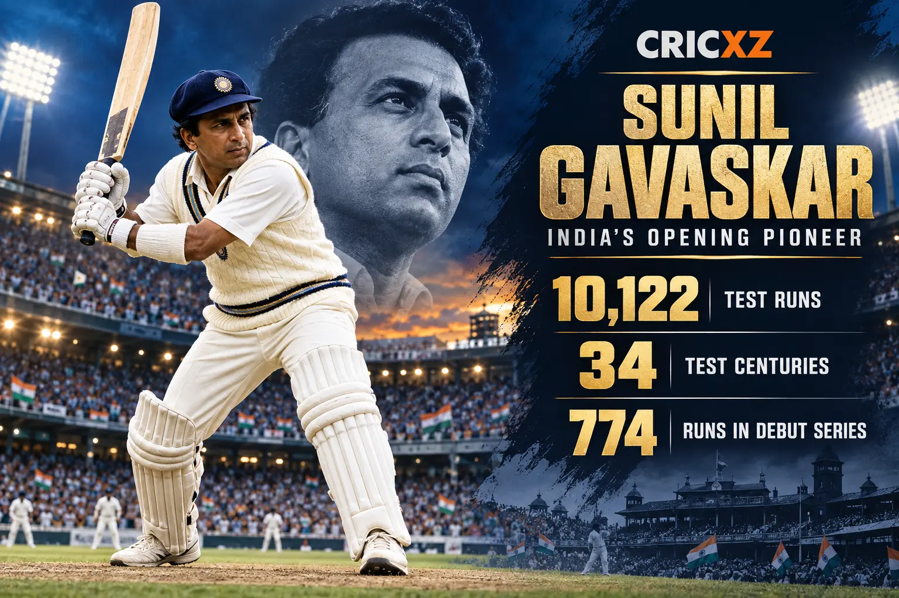
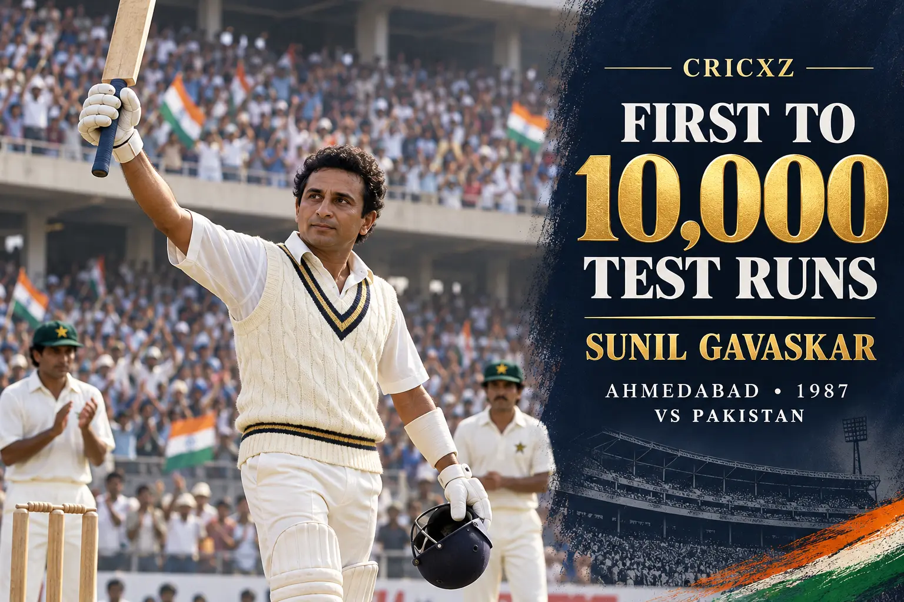

Test Career
- Matches
- 125
- Runs
- 10,122
- Highest score
- 236*
- Batting average
- 51.12
- Centuries
- 34
- Fifties
- 45
- Catches
- 108

Sunil Gavaskar scored 10,122 Test runs, became the first batter to reach 10,000 and retired with a then-record 34 Test centuries.
Career statistics are final.
Gavaskar played his final international match in November 1987. The figures above were checked against ICC and established statistical records.
Facing elite pace attacks without a modern helmet for much of his career, Gavaskar built his reputation on judgement, concentration and compact technique. His record against the West Indies and his longevity redefined the possibilities for an Indian opening batter.

On 7 March 1987 in Ahmedabad, Gavaskar became the first batter in Test history to reach 10,000 runs. He achieved the landmark during his 124th Test against Pakistan, and play paused as the crowd celebrated the unprecedented milestone.
Gavaskar scored 774 runs at an average of 154.80 during his debut Test series in the West Indies in 1971, still one of cricket's greatest debut campaigns. He later formed part of India's squad that won the 1983 World Cup.
March 1971 – March 1987
Played 125 Tests, scored 10,122 runs and retired with a batting average of 51.12.
July 1974 – November 1987
Completed a 108-match ODI career with 3,092 runs, one century and 27 fifties.
1976 – 1985
Led India in 47 Tests and captained the team to the 1985 World Championship of Cricket title.
Became the first batter in history to cross 10,000 Test runs.
Retired holding the world record for most Test hundreds.
Dominated the West Indies across four Tests in 1971.
Made his career-best against the West Indies in Chennai.
Produced a remarkable record against the era's dominant side.
Became the first cricketer to appear in 100 successive Tests.
Was inducted among the inaugural generation of Hall of Famers.
Was part of India's first men's ODI World Cup-winning squad.
Captained India to the title in Australia.
Set the benchmark for generations of Indian Test openers.
CricXZ is an independent cricket publication and is not affiliated with the ICC, BCCI or any team.
Read Sachin Tendulkar's career records, explore Kapil Dev's statistics, or browse all CricXZ player profiles.